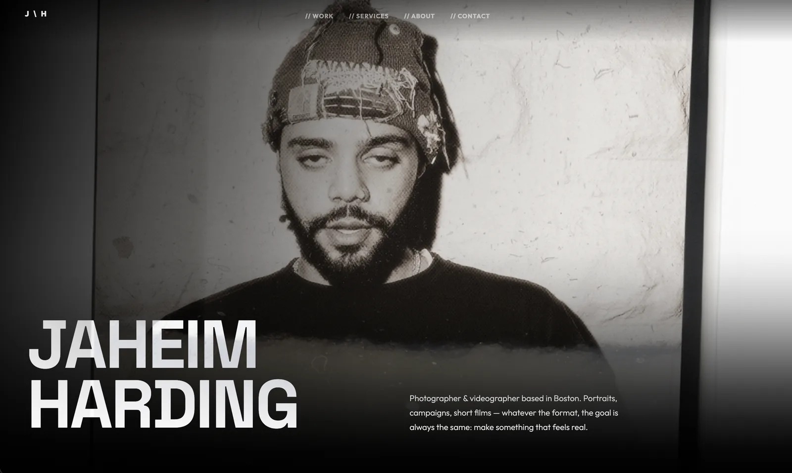

Jaheim Harding is a Boston photographer and videographer whose work moves fast: portraits, campaigns, lifestyle, and film. He needed a portfolio with the weight of a gallery and the freedom of a feed.
Most photographers get stuck. The site looks the part on launch day, then slowly falls behind the work, because every new photo means emailing a developer and waiting on a rebuild. The portfolio ages while the photographer keeps shooting.
I designed and built a bespoke site around two ideas: motion that feels like film, and a back end he actually controls. Every frame, transition, and gallery is hand-coded. Behind it sits a headless CMS he runs himself, from a dashboard, with no code and no developer in the loop.

The best thing you can build a working photographer is a site he never has to ask you to update.
He shoots, he publishes, the site keeps up. No developer required.